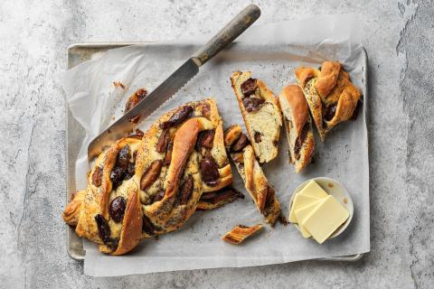

Zwetschgen-Mohn-Zopf
30 Min. Aktiv | 2 Std. 35 Min. Gesamt | 296 kcal pro 100 g
I vegetarisch | Fett: 12 g, Kohlenhydrate: 40 g, Eiweiss: 7 g pro 100 g
DAS BRAUCHTS FÜR 1 STÜCK
Teig
- 300 g Weissmehl
- ¼ TL Salz
- 2 EL grobkörniger Rohzucker
- ¼ Hefe
- 25 g Butter
- 1 ¼ dl Milch
- 1 Ei
Füllung
- 250 g Zwetschgen
- 1 EL grobkörniger Rohzucker
- 60 g Butter
- 20 g Blaumohnsamen
- 4 EL grobkörniger Rohzucker
UND SO WIRDS GEMACHT
Teig
- Mehl, Salz und Zucker in eine Schüssel geben. Hefe zerbröckeln, beigeben, mischen. Butter, Milch und Ei beigeben, zu einem weichen, glatten Teig kneten. Zugedeckt bei Raumtemperatur ca. 1½ Std. aufs Doppelte aufgehen lassen.
Füllung
- Zwetschgen entsteinen in Schnitze schneiden mit dem Zucker mischen.
- Butter schmelzen, etwas abkühlen. Mohn und Zucker beigeben, mischen.
Formen
- Teig auf wenig Mehl zu einem Rechteck (ca. 30 x 40 cm) auswallen. Mohnbutter und Zwetschgen darauf verteilen. Teig von der Längsseite her aufrollen. Rolle längs halbieren.
- Stränge so miteinander verschlingen, dass die Schnittflächen oben sind. Zopf auf ein mit Backpapier belegtes Blech legen.
Backen
- Ca. 35 Min. in der unteren Hälfte des auf 180 °C vorgeheizten Ofens. Herausnehmen, auf einem Gitter etwas abkühlen.
GUT ZU WISSEN
Das Rezept findest du hier wieder.
Bilder
